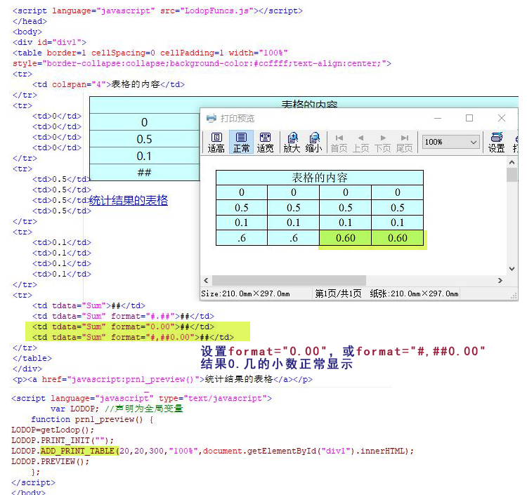

lodop中table统计结果0.几的0消失问题
lodop中用ADD_PRINT_TABLE语句，加一些数学函数，可以进行统计。具体使用方法可参照lodop官网的样例31，（http://www.c-lodop.com/demolist/PrintSample31.html），
如果统计结果是0.几，而没有设置format格式，或format格式设置的不合适的情况下，前面的0会消失，变成点加数字的格式。
解决方法是加format控制格式，测试结果：
1.不控制.不加format，结果0消失
2.控制为format="0.00"，format="#,##0.00"，结果0.几的小数正常显示。
简短问答：
1.lodop的统计结果，小数点前面的0小时了
控制下格式试试，例如设置format="0.00"，或format="#,##0.00"。
--简短问答结束----
测试代码：
<script language="javascript" src="LodopFuncs.js"></script> </head> <body> <div id="div1"> <table border=1 cellSpacing=0 cellPadding=1 width="100%" style="border-collapse:collapse;background-color:#ccffff;text-align:center;"> <tr> <td colspan="4">表格的内容</td> </tr> <tr> <td>0</td> <td>0</td> <td>0</td> <td>0</td> </tr> <tr> <td>0.5</td> <td>0.5</td> <td>0.5</td> <td>0.5</td> </tr> <tr> <td>0.1</td> <td>0.1</td> <td>0.1</td> <td>0.1</td> </tr> <tr> <td tdata="Sum">##</td> <td tdata="Sum" format="#.##">##</td> <td tdata="Sum" format="0.00">##</td> <td tdata="Sum" format="#,##0.00">##</td> </tr> </table> </div> <p><a href="javascript:prn1_preview()">统计结果的表格</a></p> <script language="javascript" type="text/javascript"> var LODOP; //声明为全局变量 function prn1_preview() { LODOP=getLodop(); LODOP.PRINT_INIT(""); LODOP.ADD_PRINT_TABLE(20,20,300,"100%",document.getElementById("div1").innerHTML); LODOP.PREVIEW(); }; </script> </body>
图示 ：
